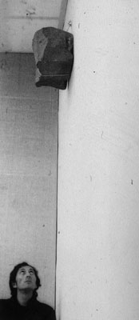
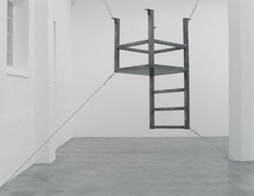
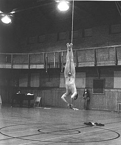
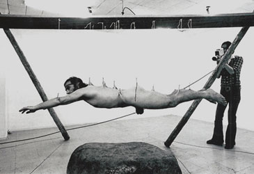
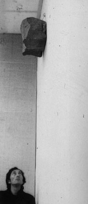
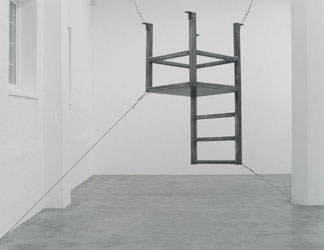
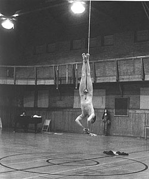
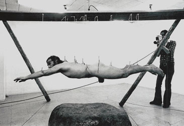

stasis
stasis  mechanics
mechanics  radical
art homepage
radical
art homepage
to suspend
|
 |
 |

 Chris Burden: Movie on the
Way Down, 1973 |
 |
stasis
to suspend
Galileo Galilei:
Due Nuove Scienze,
1638 (Fig. 1)

Giovanni_Anselmo:
Senza Titolo, 1969

Bruce Nauman: Untitled
(Suspended Chair, Vertical III), 1987

Chris Burden: Movie on the Way Down, 1973

Stelarc: Event for Stretched Skin, 1976